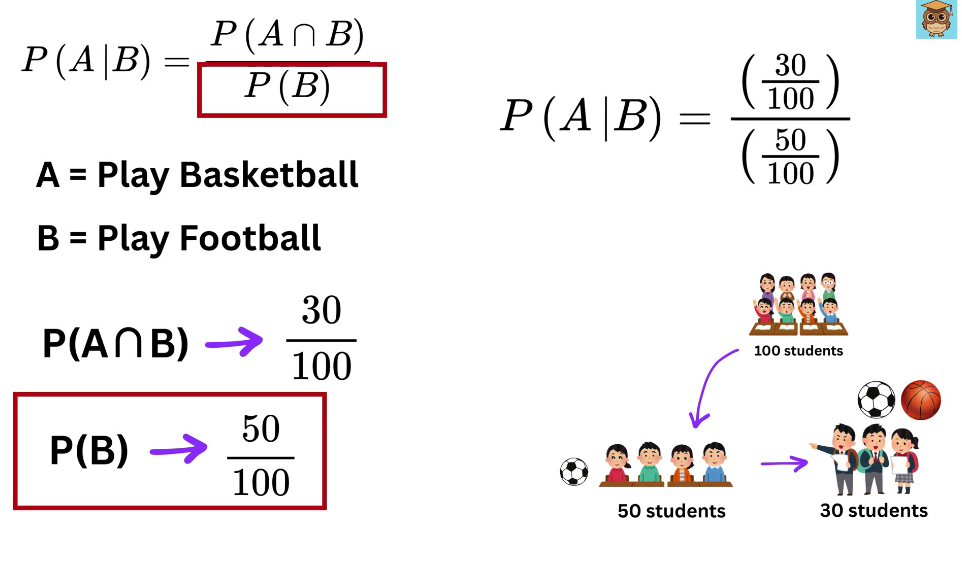

05. 조건부확률과 베이즈
확률을 읽을 때 가장 먼저 물을 것은 무엇을 분모로 세고 있는가다. 조건부확률은 관측한 조건을 만족하는 경우만 기준 집합으로 삼는다. 베이즈 정리는 이미 아는 방향의 조건부확률을 이용해 반대 방향을 계산한다. LLM의 다음 토큰 확률도 앞 문맥에 조건을 둔다는 점에서 연결된다.
원문 62~66쪽을 다룬다. 비율과 사칙연산만으로 학습할 수 있다. 이 장을 마치면 조건부확률의 분모를 고르고, 자연빈도 표에서 사후확률을 구하며, LLM 문맥 변화와 파라미터 학습을 구별할 수 있어야 한다. 1~3절을 계산한 뒤 4절에서 언어모델과 연결한다.
1. 조건이 기준 집합을 바꾼다
사건은 관심 조건을 만족하는 결과들의 집합이다. 원문의 A는 농구를 좋아하는 학생, B는 축구를 좋아하는 학생이다. 전체 100명 중 B는 50명, 둘 다 좋아하는 A∩B는 30명이다. ‘축구를 좋아하는 학생 중 농구도 좋아할 확률’은 B의 50명만 놓고 그 안의 30명을 세는 질문이다.
아래에서 붉은 상자로 강조된 분모와 오른쪽 사람 수의 변화를 연결하자.

원문 그림의 영어 Play Basketball/Football은 본문 ‘좋아함’과 섞여 있다. 이 교재에서는 학생들의 선호라는 같은 사건으로 일관되게 읽는다. 실제 운동 참여와 선호가 같다고 가정하는 것은 아니다. 오른쪽 화살표는 기준 집합을 좁히는 순서이며 시간에 따라 학생 수가 줄었다는 뜻이 아니다.
P(A∩B)=30/100=0.3
P(B)=50/100=0.5
P(A|B)=P(A∩B)/P(B)=0.3/0.5=30/50=0.6
|는 ‘주어졌을 때’, ∩는 ‘둘 다’를 뜻한다. P(B)>0이어야 이 분수 정의를 쓸 수 있다. 조건부확률 0.6과 교집합 확률 0.3은 서로 다른 질문의 답이다. 현재 정보로 P(B|A)는 구할 수 없다. A 전체 인원이 주어지지 않았기 때문이다.
작은 활동: 농구를 좋아하는 전체 학생이 40명이라고 추가로 가정하면 P(B|A)=30/40=0.75다. 축구 조건의 0.6과 다르다. 이 40명은 원문 값이 아닌 교육용 보충 가정이다. 조건의 방향을 바꾸면 분모가 바뀌는 것이 원인이다.
2. 베이즈 정리는 교집합을 두 방향에서 세는 식이다
P(A|B)P(B)=P(A∩B)이고 P(B|A)P(A)=P(A∩B)다. 같은 교집합이므로 두 식을 같게 놓고 P(B)로 나누면 다음과 같다.
P(A|B) = P(B|A)P(A) / P(B)
| 기호 | 이름 | 이 장에서의 역할 |
|---|---|---|
| P(A) | 사전확률(prior) | B를 관측하기 전 관심 사건 A의 비율 |
| P(B | A) | 우도(likelihood) |
| P(B) | 증거확률(evidence) | A 여부에 관계없이 B가 나올 전체 확률 |
| P(A | B) | 사후확률(posterior) |
우도는 A를 가정했을 때 B가 얼마나 가능한지를 본다. 사후확률은 B를 관측한 상태에서 A를 묻는다. 둘을 바꾸어 읽지 않는다. 사전확률과 우도가 있어도 분모의 정규화가 필요하다. A와 A가 아닌 경우 ¬A로 전체를 나누면:
P(B)=P(B|A)P(A)+P(B|¬A)P(¬A).
이는 두 경우가 겹치지 않으며 전체를 덮기 때문에 더할 수 있는 식이다. 원문 63쪽 조건 보완: 교집합이 희귀한 경우에만 베이즈 정리를 쓰는 것은 아니다. 교집합을 직접 측정하기보다 반대 방향 확률과 사전 비율을 알기 쉬울 때 유용하다. B의 확률이 0이면 위 나눗셈은 정의되지 않는다. P(B|A)를 분수로 정의하는 이 전개에서는 P(A)>0도 전제한다.
3. 자연빈도로 계산한 뒤 확률식으로 옮긴다
원문의 가상 검사 예제다. 실제 검사 결과를 해석하는 지침이 아니라 분모의 차이를 배우는 수학 모형이다. 전체 10,000명에서 해당 상태를 가진 비율을 1%, 그 상태일 때 양성 비율을 99%, 상태가 아닐 때 음성 비율을 95%로 가정한다.
민감도는 P(양성|상태)=0.99, 특이도는 P(음성|¬상태)=0.95다. 따라서 위양성률은 P(양성|¬상태)=0.05다. 자연빈도란 추상 비율 대신 같은 규모의 사람 수로 바꾸어 세는 방법이다.
| 실제 상태 | 양성 | 음성 | 합계 |
|---|---|---|---|
| 해당 상태 | 100×0.99=99 |
1 | 100 |
| 해당하지 않음 | 9900×0.05=495 |
9405 | 9900 |
| 합계 | 594 | 9406 | 10000 |
양성이라는 조건을 얻으면 표의 양성 열만 남긴다. 그중 실제 상태에 해당하는 99명을 전체 양성 594명으로 나누면 99/594=1/6≈16.7%다. 99%는 실제 상태가 있는 사람들 안에서의 비율이고, 16.7%는 양성인 사람들 안에서의 비율이다. 작은 위양성률도 큰 비해당 집단에 적용되면 많은 위양성을 만든다.
65쪽의 확률식은 같은 표를 10,000으로 나눈 것이다.
진양성 확률 = 0.99×0.01 = 0.0099
위양성 확률 = 0.05×0.99 = 0.0495
전체 양성 확률 = 0.0099+0.0495 = 0.0594
P(상태|양성) = 0.0099/0.0594 = 99/594 ≈ 0.166667
분모에 진양성만 넣으면 답이 항상 1이 되어 위양성을 누락한다. 반대로 10,000으로 나누면 사후확률이 아니라 진양성의 전체 확률 0.0099를 구한 것이다.
조건 변경 활동: 같은 민감도·특이도에서 사전 비율만 10%로 바꾸자. 10,000명 중 해당 상태 1,000명에서 진양성 990명, 비해당 9,000명에서 위양성 450명이다. 예상 사후확률은 990/(990+450)=0.6875, 즉 68.75%다. 검사 특성을 그대로 두어도 사전 비율이 달라지면 결과가 달라진다. 이 가상 계산을 실제 집단으로 옮기려면 그 집단의 비율과 검사 특성이 같은지 별도로 확인해야 한다.
4. LLM의 문맥 조건과 베이지안 해석을 구분한다
원문 66쪽은 세 연결을 나란히 제시한다.
| 연결 | 정확히 읽을 내용 | 넘어서 해석하지 않을 내용 |
|---|---|---|
| 다음 토큰 예측 | `P(wₜ | w<ₜ)`에서 앞 토큰들이 조건이다. 토큰이 붙으면 다음 단계의 조건이 달라진다. |
| 문맥 학습 | 지시·예시가 프롬프트에 들어오면 답변의 조건이 달라진다. | 일반적인 추론 중에 가중치를 학습으로 갱신했다는 뜻은 아니다. |
| 검색 증강 생성(RAG) | 검색 자료를 생성에 이용하면 외부 근거를 조건으로 추가할 수 있다. | 검색 결과가 있다는 이유만으로 모든 답이 사실이라는 보장은 아니다. |
보충 작은 예: 두 후보 답변 A,B에 대해 문맥 C₁에서 (0.7,0.3), 추가 근거가 담긴 C₂에서 (0.2,0.8)이 나왔다고 가정하자. 이는 조건이 달라져 출력 분포가 달라진 교육용 수치다. 이 두 분포만으로 모델이 실제 베이즈 식을 실행했는지, 내부 가중치가 바뀌었는지를 알 수 없다. 주어진 문맥에 맞춰 계산한 활성값과 확률의 변화는 학습의 가중치 갱신과 구분된다.
RAG의 원 논문은 학습된 파라미터와 검색 가능한 외부 메모리를 결합해 생성하며, 비교 실험에서 더 사실적인 생성을 보고한다. 이는 특정 실험 결과이며 모든 검색·모델·질문에 대한 보증으로 확장할 수 없다. Lewis 외, Retrieval-Augmented Generation for Knowledge-Intensive NLP Tasks(2020, 확인 2026-11-09)를 근거로 연결을 보충했다. 이 교재는 실제 모델 호출이나 검색 실험을 수행한 결과를 제시하지 않는다.
5. 확인 질문과 해설
- 1절에서 30/100과 30/50은 각각 어떤 확률인가?
P(A|B)=P(B|A)라고 써도 되는가?- 원문 예제에서 증거확률 0.0594는 무엇을 모두 포함하는가?
- 사전 비율만 바뀌었는데 사후확률이 바뀌는 이유는 무엇인가?
- 프롬프트에 자료를 붙여 답이 바뀌면 역전파가 일어난 것인가?
해설: 1은 교집합 확률과 축구 선호를 조건으로 한 농구 선호 확률이다(1절). 2는 일반적으로 안 된다. 같은 교집합을 서로 다른 기준 집합으로 나눈다(2절). 3은 진양성과 위양성 모두다(3절). 4는 진양성과 위양성이 생기는 두 집단의 상대 크기가 달라졌기 때문이다(3절). 5는 그렇다고 결론 낼 수 없다. 주어진 가중치로 다른 입력의 조건부확률을 계산한 것일 수 있다(4절).